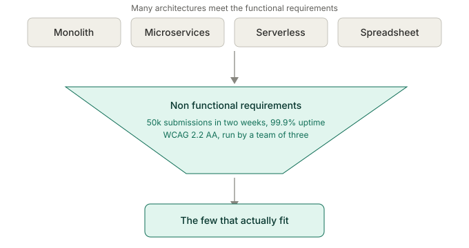
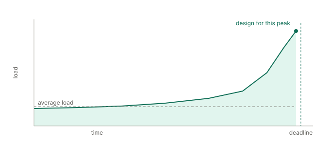
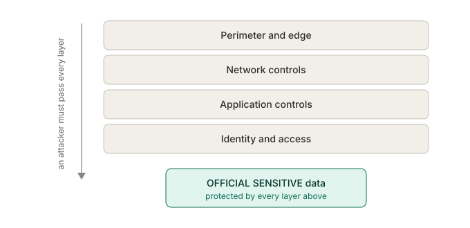
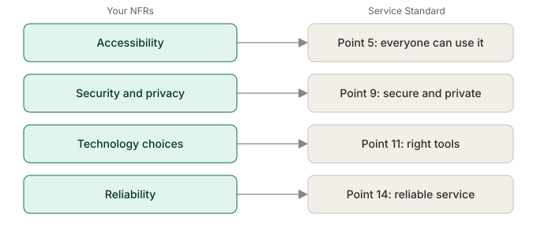

Functional and non functional requirements
Here's something that catches new architects off guard: what a system does barely shapes its architecture, while how it has to behave shapes almost everything. Two services doing completely different jobs can share an architecture if they face the same demands for speed, scale and security. Two services doing the identical job can need completely different architectures if one handles a hundred records a year and the other handles ten million. This guide is about those behavioural demands, the non functional requirements, and why they, not the feature list, decide most of what you build.
You'll come away with:
- Why non functional requirements drive architecture decisions more than the feature list does.
- How to pin down performance, scalability, availability and security as targets you can test.
- Why accessibility and security are designed in from the start, never added at the end.
- A method for writing requirements that are specific, measurable and verifiable.
Why non functional requirements drive the architecture
This runs against how most projects work. They start with the functional requirements, what the system should do, and treat everything else as something to sort out later. Performance next sprint. Security before launch. Accessibility at the end. That order fails reliably, and it's worth understanding why. Functional requirements tell you what to build. Non functional requirements tell you how to build it, and the how is the architecture. Take a service that lets businesses submit annual energy reports. The functional requirements are unremarkable: sign in, show a form, validate it, store the submission, send a confirmation. Plenty of architectures could deliver that, from a single web application to a set of microservices to a chain of serverless functions, even a well built spreadsheet with macros.

Now add the behavioural demands. It has to take fifty thousand submissions in a two week window. It has to stay up through that window. It has to meet WCAG 2.2 AA. It has to protect commercially sensitive data at OFFICIAL-SENSITIVE. It has to be run by a team of three, and changed every year when the regulations move. The options collapse. The spreadsheet is gone. The single application may buckle under the burst. Serverless scales but loads complexity onto a small operations team. The architecture is being decided almost entirely by the non functional requirements. This is why architects who fixate on features ship systems that do the right things badly: too slowly, or falling over under load, or impossible to change when the policy shifts, or shutting out anyone on a screen reader. Those are architecture failures, and they trace straight back to NFRs treated as an afterthought.
Functional requirements tell you what to build. Non functional requirements tell you how. The how is the architecture.
Performance: what "fast enough" actually means
Performance is the requirement everyone thinks they understand and few write down properly. "It should be fast" is not a requirement. "It should respond within two seconds under normal load and within five under peak" is. A few dimensions are worth separating. Response time is how quickly the system answers a user action, and GDS guidance is to set a performance budget for each page rather than assume a single number, since a simple page, a complex search and a report each deserve their own target. Throughput is how much it handles per unit of time, and a system built for ten requests a second looks nothing like one built for ten thousand. Latency is how long data takes to move through the system, and whether a regulator needs to see a submission within a second, within minutes or overnight reshapes your integration design. Resource use is the quiet one, and since you are spending public money on cloud, efficiency is a value for money question, not only a technical one.

The government trap is the deadline spike. Tax returns, grant rounds, regulatory reports: usage is not smooth, it climbs hard as a deadline nears. Design for the average and you fall over on the busiest day of the year. Get your numbers from data where you can, the current service's load, its peak to average ratio, its busy periods, and where there's no data, write your assumptions down and test them in alpha.
Scalability and availability
Scalability and availability sound like the same thing and are not. Scalability is coping with more load. Availability is staying up over time. For scalability, the question is what shape the growth takes. Steady growth, a new service gaining users over months, wants an architecture you can scale a step at a time. Periodic spikes, the annual deadline, want elastic scaling, capacity you add fast and release afterwards, which is where cloud earns its keep. Unexpected surges, a policy announcement that lands on the news, want elastic scaling and graceful degradation together, so the core still works even when demand outruns capacity. During the pandemic, services built to scale elastically were better placed to absorb sudden surges in traffic than those built for a steady state.
Availability gets quoted as a percentage, and the number means little on its own. 99.9% sounds strong until you work out it still allows nearly nine hours of downtime a year. Fine for an internal tool used in office hours. Not fine for a service businesses depend on to meet a legal deadline. State the target uptime, the period you measure it over, when planned maintenance is allowed, how fast you have to recover from a failure, and how much data you can afford to lose. Then match those to the real impact of the service going down, rather than to a number that sounds reassuring in a slide.
Designing security in from the start
Security is a property of the whole system, and it has to be there in the design rather than added to a finished build. In government a handful of frameworks set the terms. Data classification sets the baseline, so know the classification of every data type your service touches, mostly OFFICIAL with some OFFICIAL-SENSITIVE, and design to it. The Secure by Design approach that GDS and NCSC promote expects security to be considered at every stage rather than added at the end, which for an architect means a few habits:
- Threat modelling while you design, working out what could go wrong and building the mitigations in.
- Secure defaults, so the system is safe out of the box rather than safe only once someone configures it.
- Least privilege, so people and systems hold only the access they actually need.
- Defence in depth, so no single failure opens the whole thing up.

Authentication and authorisation are architecture decisions in their own right. Whether users sign in through GOV.UK One Login, a departmental provider or a third party changes the security properties, the user experience and the integration work, and authorisation, who is allowed to do what, is usually the harder half. Data protection law shapes the rest: collect only what you need, use it only for the stated purpose, keep it no longer than necessary, protect it appropriately. Where your processing of personal data is likely to be high risk you'll need a DPIA, and the architecture has to support the controls it identifies. Through all of it you are balancing security against usability, because every control adds friction. The aim is protection proportionate to the risk, not security theatre that irritates users without making them any safer.
Security designed in from the start holds. Bolted on at the end, it is mostly theatre.
Accessibility shapes the architecture
In government accessibility is law, not aspiration. The Public Sector Bodies Accessibility Regulations require public sector sites and apps to meet WCAG 2.2 AA, the Equality Act requires reasonable adjustments, and the Service Standard assesses it. For you that is a constraint reaching into fundamental decisions. Front end choices matter, because a single page application can break screen reader updates, keyboard navigation and the back button, which doesn't rule it out but does mean understanding the cost and designing around it. The GDS pattern of progressive enhancement, a baseline that works without JavaScript and then improves with it, is an architectural stance, not a styling detail. Content structure matters too, because semantic markup, heading order, link text and alternative text have to be supported by your content system and your form builder, or the service can't be made accessible however good the front end code is. How you handle errors is a design decision with accessibility built in, as is the format of anything you generate: PDF accessibility is famously hard, HTML is generally kinder, and choosing between them ripples through generation, storage and delivery. The GDS Design System gives you components already tested with assistive technology, and adopting it is itself an architecture decision that narrows your technology choices and cuts your accessibility risk. None of this can be sprinkled on at the end. An architecture that ignored accessibility needs rebuilding to get it, so treat it as first class from day one, alongside security and performance.
Operability and maintainability: designing for the long run
Most architecture attention goes on building the system and far too little on running and changing it, which is backwards, because government services run for years or decades and the team that builds one is rarely the team that keeps it alive. Operability is how easily you can run it in production. That means instrumentation designed in, the logs, metrics and health checks that tell you something is wrong before users do; deployments that are routine, low risk and reversible, with pipelines, feature flags and a way back; incident response made easy by clear logs and runbooks; and capacity you can see and forecast. Maintainability is how easily you can change it. That means code a developer who never met the original team can follow, clear boundaries and loose coupling so a change in one place doesn't ripple everywhere, tests that let you verify a change safely, and policy rules held in configuration rather than code wherever practical, which matters enormously when a regulation changes and you have days, not months, to respond.
The way to make these real is to state them as targets. A new joiner should be able to make a simple change safely in their first week. A deployment should take under thirty minutes with no downtime. The root cause of a production incident should be findable within the hour. A policy rule change should be deployable within two working days. Targets like those push directly on the architecture: a set of microservices may score well on modularity and badly on operational load for a team of three, while a single application may be simpler to run and riskier to change safely. Which is right depends on the operability and maintainability targets you wrote down, which is exactly why you write them down.
Capturing and quantifying requirements
The hard part of non functional requirements is not understanding them. It is capturing them so they are specific enough to drive a decision and testable enough to verify. A method that works for government services:
- Start from categories as a checklist: performance, scalability, availability, security, accessibility, operability, maintainability, compliance. For each, ask what this service actually needs.
- Make every one measurable. Not "fast" but "page load under two seconds at the 95th percentile". Not "available" but "99.9% measured monthly, excluding planned maintenance". Not "secure" but "encrypted in transit with TLS 1.2 or later, and at rest".
- Specify the conditions. "Under two seconds" means nothing without the load it holds at, and "99.9%" means nothing without the period and the hours it covers.
- Prioritise hard. Use MoSCoW or similar to separate the genuinely non negotiable from the merely desirable, because a payments service and a guidance site do not share security priorities.
- Agree them with the people who care: performance with users and operations, security with the security team and the SIRO, availability with the service owner, accessibility with the accessibility lead and researchers.
- Record why each target sits where it does, so a future architect can tell whether it still holds when the context changes.
- Plan how you'll verify each one: load testing for performance, monitoring for availability, penetration testing for security, automated and manual testing for accessibility. A requirement you can't verify isn't a requirement.
A well captured set of these is one of the most useful things you'll produce. It drives the architecture, steers the technology, shapes the test strategy, and gives the assessment something concrete to check. The time you spend getting it right pays back many times over.
Non functional requirements at service assessment
Public-facing services are assessed against the Service Standard at alpha, beta and live, and several of the points are non functional requirements in all but name. Get the requirements right and these largely look after themselves; treat them as an afterthought and the assessment finds out quickly.

Assessors are experienced practitioners, and they can tell when these were bolted on. They ask the questions that have specific answers. What are your availability targets, and how did you arrive at them? How have you tested with assistive technology? What happens at twice the expected load? Answer those with evidence and the conversation goes well. Answer with a shrug and it doesn't. None of this is about gaming the assessment. The criteria exist because they describe the qualities that make a service work, for the people using it and for the government running it, and your non functional requirements are how the architecture delivers them.
Get the non functional requirements right and the architecture has a backbone. Get them wrong and it does the right things badly.